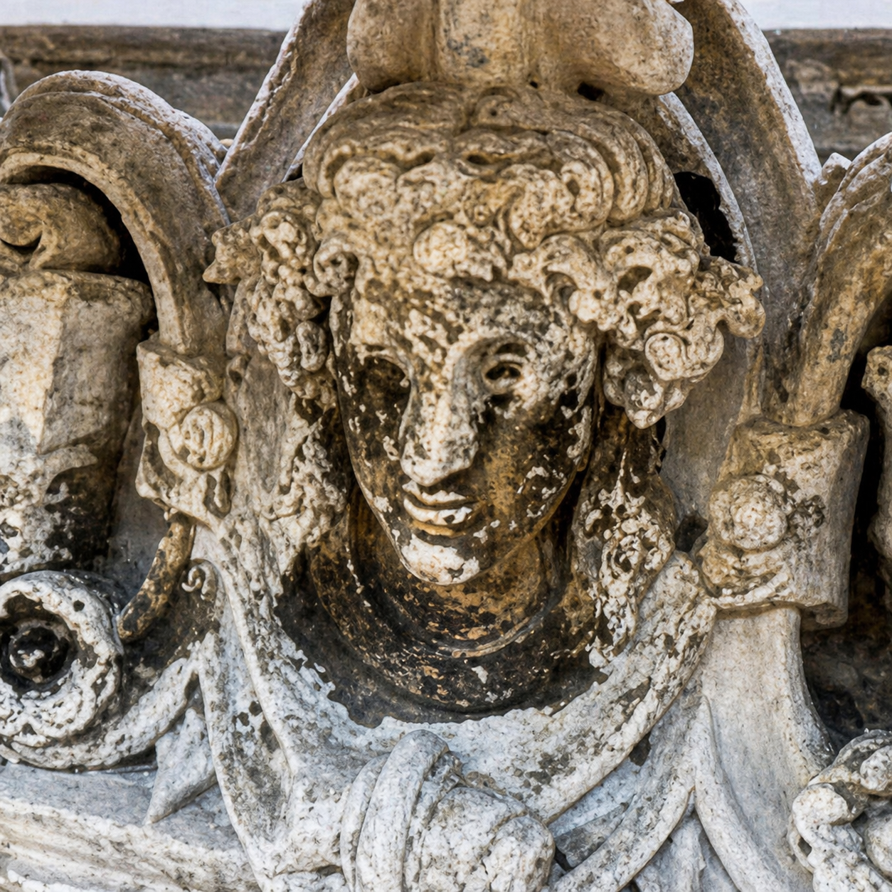
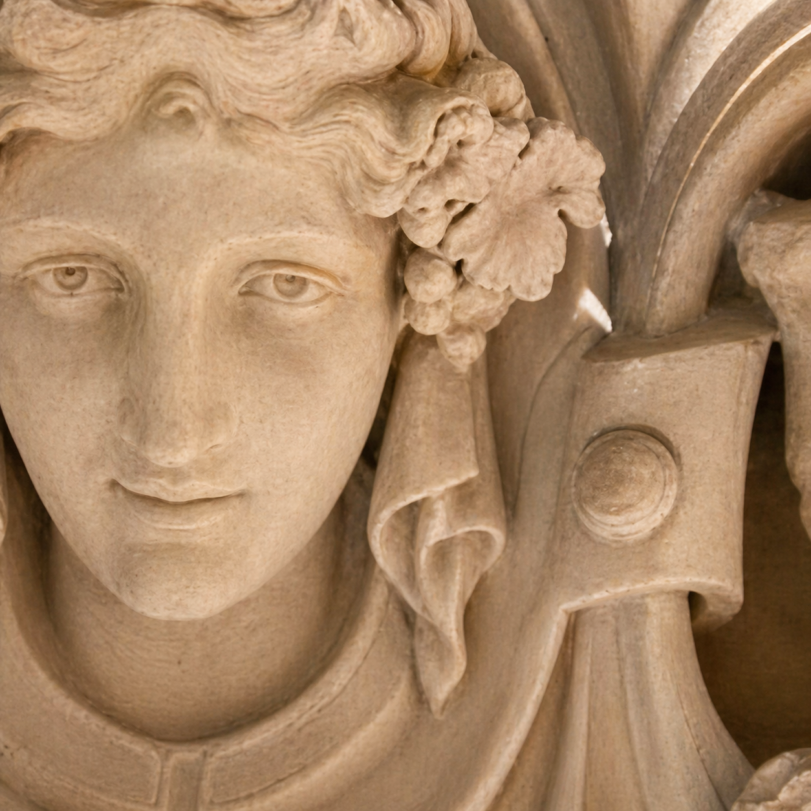
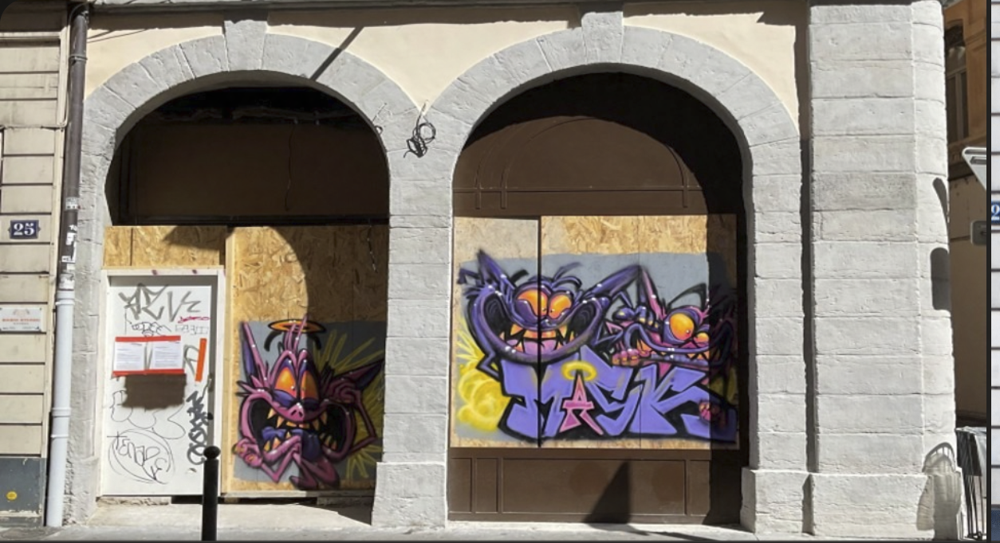
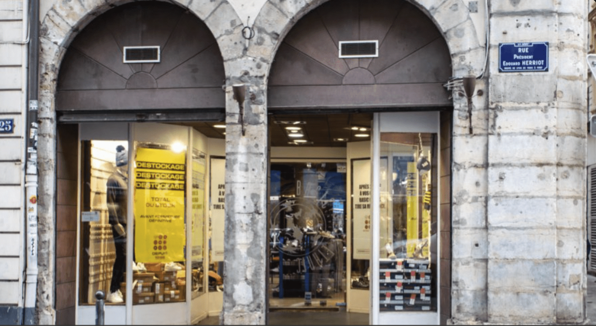
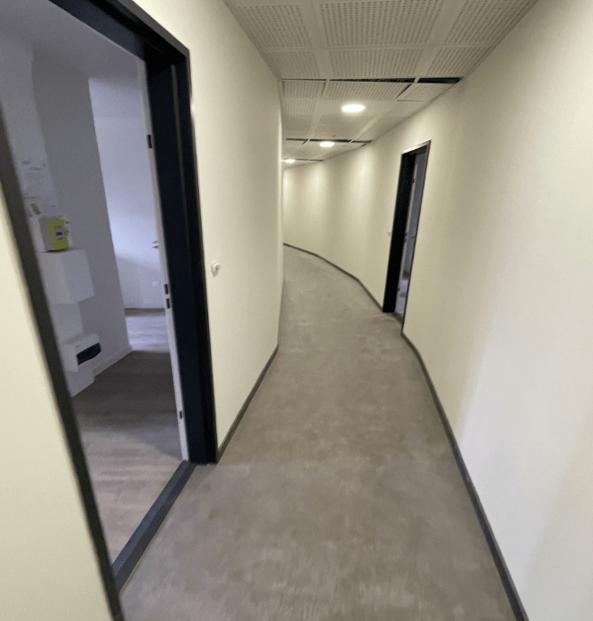
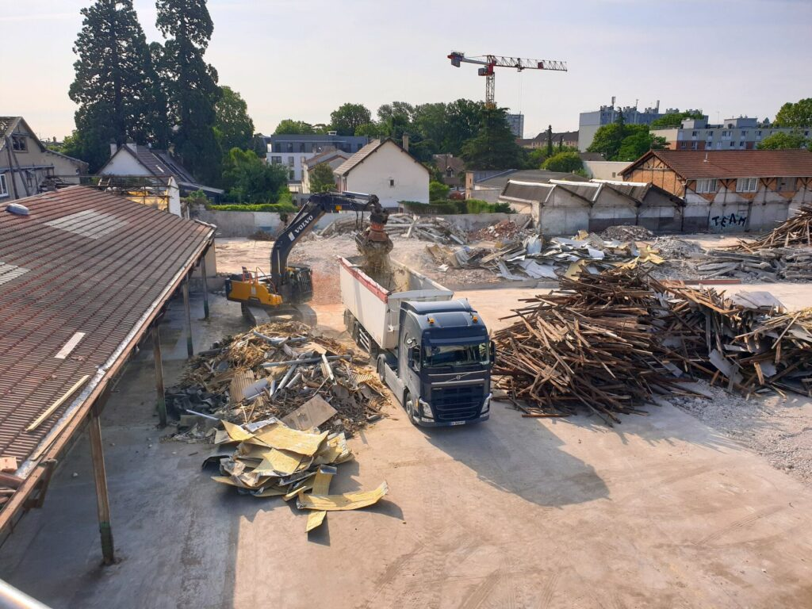

Des chantiers qui
parlent d'eux-mêmes.
Découvrez nos projets récents alliant qualité d'exécution, économies d'énergie et esthétisme. Chaque réalisation est une référence — restauration patrimoniale, isolation thermique ou rénovation globale.
Restauration de bâti ancien — Mascarons sculptés
Ravalement de façade et restauration minutieuse des mascarons sculptés, détériorés par le temps et par un sablage agressif. Nettoyage contrôlé, purge, rejointoiement à la chaux, ragréage, sculpture et reconstitution volumique.

Photo disponible sur selesta.fr
Photo disponible sur selesta.frRavalement façade ancienne — Futur Cartier Lyon
Ravalement et restauration de la façade en pierre avec techniques traditionnelles : badigeon de chaux, nettoyage doux, reprise d'ornements. Un chantier de prestige pour l'ouverture de la prochaine bijouterie Cartier à Lyon.

Photo sur selesta.fr
Photo sur selesta.frTransformation de l'Abbaye — 24 logements
Transformation de l'aile ouest de l'Abbaye de La Rochette en béguinage : création de 24 logements avec isolation thermique intérieure, cloisons, plafonds, peintures et menuiseries. Un projet alliant respect du patrimoine historique et efficacité énergétique.


Isolation & bardage bois — Bâtiment tertiaire
Isolation thermique par l'extérieur et habillage en bardage bois sur ossature pour ce bâtiment tertiaire à Vénissieux. Pose de laine de roche, traitement des ponts thermiques, pare-pluie et bardage bois vertical en finition.


Ouverture mur porteur — Baie vitrée panoramique
Transformation d'une maison traditionnelle en villa moderne et lumineuse. Ouverture de mur porteur, installation d'une baie vitrée panoramique (+150 % de surface vitrée), isolation thermique extérieure, rénovation des sous-faces et descentes d'eau.


Rénovation complète — Second œuvre & finitions
Prise en charge complète d'un chantier de rénovation intérieure : démolition des cloisons existantes, création de nouvelles parois, isolation thermique, plâtrerie, peinture et finitions. Un interlocuteur unique du gros œuvre aux finitions.
.jpg)

Structures métalliques & démolition maîtrisée
Ouvertures de murs porteurs, pose d'IPN, démolition sélective et terrassement. Selesta intervient sur tous les travaux de gros œuvre et maçonnerie, avec des équipes équipées et qualifiées pour les chantiers les plus techniques.


Votre projet mérite
la même rigueur.
Devis gratuit sous 48h, diagnostic précis, accompagnement clé en main.